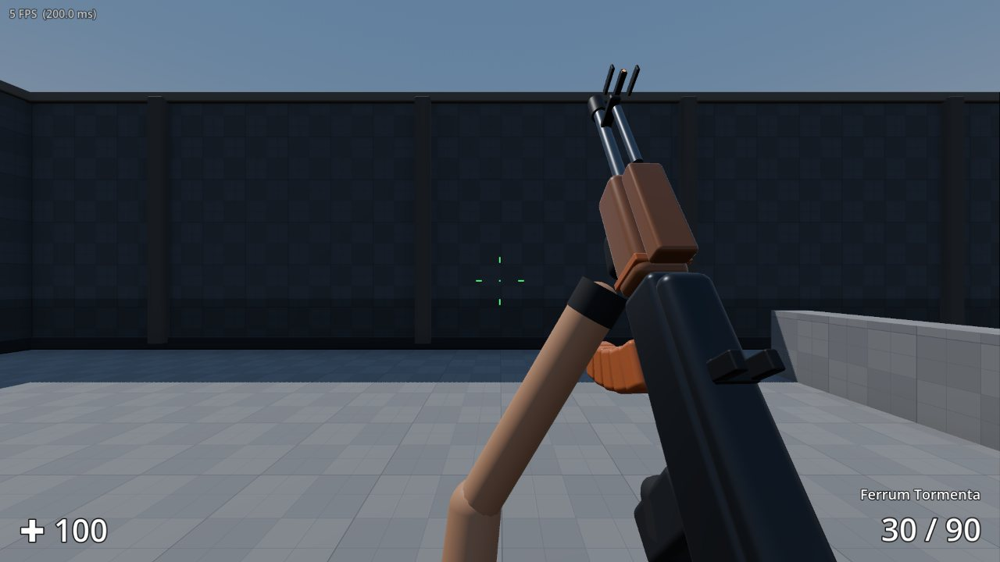
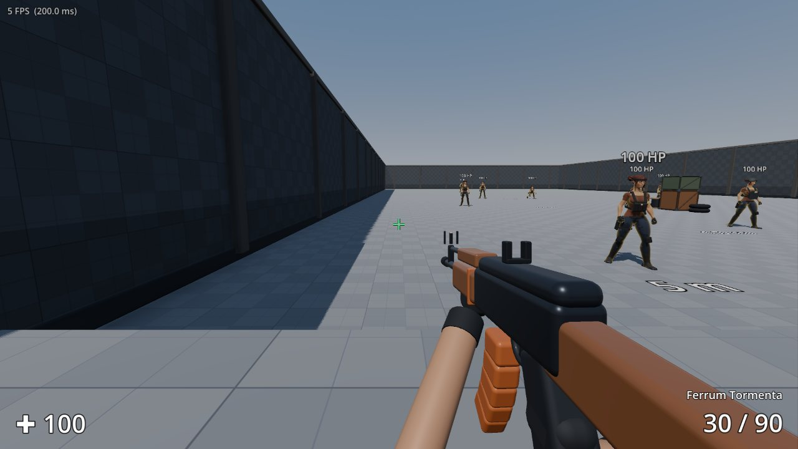
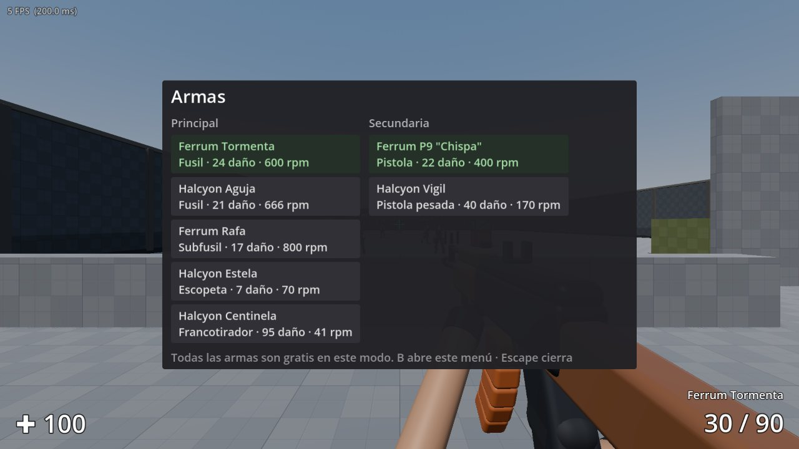
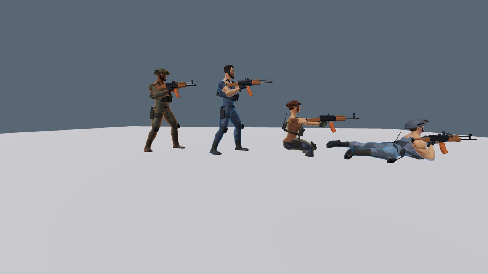

Rápido, táctico y en equipo
Cada arma pega distinto, el daño es progresivo y cada pelea se gana con posición y puntería. Entre partidas sube de nivel y elige a tu operador.
Movimiento estilo Warzone
Sprint y sprint táctico, deslizamiento, lanzarse en plancha, cuerpo a tierra, escalar bordes de hasta 2 metros, asomarse con Q y E, y apoyar el arma en un borde para controlar el retroceso.
Zona Cero: battle royale
Hasta 30 jugadores en el mapa Valle Ceniza: salta en paracaídas, busca armas y placas de armadura, huye del gas y, si caes, gánate la vuelta en el gulag 1 contra 1.
Siete modos
Zona Cero, Competitivo 5 contra 5 con compras por ronda (también clasificatoria con rangos de Bronce a Leyenda), Búsqueda y destrucción, Rey de la colina, Por equipos, Captura la bandera y Todos contra todos.
Rachas de bajas
Encadena 3 bajas para un radar, 5 para un ataque aéreo y 7 para un dron de ataque que caza a tus enemigos.
De día, de noche y con lluvia
Amanecer, día, atardecer o noche con las luces encendidas, y lluvia con truenos o niebla densa.
Para todos
Mira personalizable, modos para daltónicos, subtítulos de sonidos, calidad gráfica automática y 22 logros.
Nueve mapas
Fundición, Puerto, Azotea, Estación, Cantera, Arena, Presa, Mercado y el enorme Valle Ceniza para Zona Cero.
Armas y accesorios
Once armas, entre ellas una ametralladora ligera, un tirador semiautomático y una carabina. Monta mira de punto rojo, silenciador, cargador ampliado, empuñadura o culata ligera.
Cada disparo se siente
Marcadores de impacto, sonido distinto para cabeza y baja, números de daño, trazadores, agujeros de bala e indicador de dónde te disparan.
Bots que juegan en equipo
Se cubren, flanquean, lanzan granadas, compran según su dinero, plantan y desactivan la bomba, y van a por la bandera. Cuatro niveles de dificultad.
Progreso y desafíos
Sube de nivel para desbloquear armas y operadores, gana camuflajes, sigue tus estadísticas por arma y completa desafíos diarios y semanales.
Emotes y comunicación
Diez emotes en tercera persona, chat rápido con mensajes de equipo, chat de texto y chat de voz con tu equipo.
Minimapa, brújula y marcas
Ve a tus compañeros en todo momento; los enemigos solo aparecen cuando disparan. Marca un punto con la rueda del ratón y tu equipo lo verá a través de las paredes.
Teclado o mando
Funciona con mandos de Xbox, PS4 y PS5, con vibración por arma, asistencia de apuntado y los botones correctos en pantalla según tu mando.
Con amigos o contra bots
Crea una partida privada con clave y pasa la dirección a tus amigos, o practica contra bots de cuatro dificultades y en el campo de tiro.
Así se ve




Teclado y mando
Todo se puede cambiar en Ajustes, incluido mantener o pulsar para esprintar y agacharse.
| Acción | Teclado y ratón | Mando (Xbox / PlayStation) |
|---|---|---|
| Moverse / mirar | W A S D · ratón | Sticks |
| Disparar / apuntar | Clic izquierdo / derecho | RT / LT · R2 / L2 |
| Esprintar · sprint táctico | Shift · doble toque | L3 · otra vez |
| Agacharse · deslizarse | Ctrl (al esprintar se desliza) | B · ○ |
| Cuerpo a tierra · lanzarse | Z (al esprintar se lanza) | Mantener B · ○ |
| Saltar · escalar | Espacio contra el borde | A · ✕ |
| Cuerpo a cuerpo · apoyar arma | V | R3 |
| Recargar · cambiar arma | R · rueda o 1–5 | X · Y |
| Granada (mantener para apuntar) | 4 y clic | RB · R1 |
| Marcar · mapa | Rueda (clic) · M | Cruceta arriba · Back |
| Comprar / armería | B | Cruceta abajo |
| Emotes | Mantener T | Mantener cruceta arriba |
| Chat rápido · texto | C · Enter | Mantener Y · △ |
| Hablar con el equipo | K | Mantener cruceta abajo |
| Racha de bajas | X | Mantener RB · R1 |
| Placa de armadura (Zona Cero) | Mantener H | Cruceta abajo |
| Inspeccionar arma | I | Doble toque cruceta derecha |
Listo en un minuto
Descarga el instalador con el botón de arriba (LineaCero-Setup.exe, 71 MB).
Ábrelo y sigue los pasos. Crea un acceso directo en el escritorio.
Para jugar con amigos, uno crea la partida desde el menú y los demás entran en «Unirse a un servidor» con la dirección y la clave que les pase.